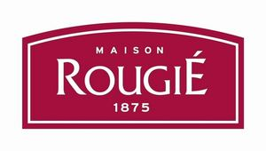

Trade Mark Journal No.2025/011 14 March 2025
WO0000001841570 (29,30,41)
Office of origin: France
Date of International Registration:13 December 2024
Date of designation in the UK:
13 December 2024

The mark consists of the wording “MAISON ROUGIÉ 1875” written in white inside a red rectangular backdrop with a curved top. A thin white line is depicted inside the backdrop and follows its contours
Registration of this designation shall give no right to the exclusive use of the words 'MAISON' and '1875'.
The mark contains the colours white and red
International priority date claimed: 2 August 2024
(France)
(5074551)
- Class 29
- Meat, duck meat, fish, poultry and game; smoked fish; extracts of meat, fish, poultry and game; preserves based on meat, fish, poultry, crustaceans, game, fruit or vegetables; prepared or cooked dishes based on meat, fish, crustaceans, poultry, game, fruit or vegetables; canned cooked dishes based on meat, poultry, fish, game and vegetables; canned duck confits; canned goose confits; caviar; preserved mushrooms; liver pâté, rillettes, foie gras, fresh foie gras; salted meats; preserved, namely cooked, semi-cooked and semi-preserved foie gras products; confit gizzards, smoked duck breasts; prepared dishes based on foie gras, offal, duck breasts, gizzards, fish; preserved, dried and cooked fruit and vegetables; jellies; jams; compotes; eggs; edible oils and fats; preserved truffles; frozen raw vegetables, frozen cooked vegetables; charcuterie; crustaceans, not live; shellfish, not live; potages; bouillon and preparations for making bouillon; cheeses; milk and dairy products; yogurt; non-living anchovies; prepared peanuts.
- Class 30
- Flour and cereal preparations; bread; petits fours (biscuits); pasta and noodles; ravioli; sushi; puff pastries; meat pies; pasties; quiches; pancakes; tarts; pies; pizzas; spices; breads; pastry and confectionery; yeast; seasonings; salt; vinegar; sauces and other condiments; meat gravies, namely sauces; edible ices; cookies, biscuits, sweets, brioches; coffee, tea, cocoa, sugar, rice, tapioca, sago, artificial coffee; preserved garden herbs.
- Class 41
- Training; education; organization of events for cultural and entertainment purposes; organization of competitions in the field of education or entertainment; organization of competitions in the culinary field; organization and conducting of colloquiums, conferences or congresses with respect to training; organization of exhibitions for cultural or educational purposes; publication of books; book lending; game services provided online from a computer network; electronic publication of books and journals online; electronic desktop publishing.
EURALIS GASTRONOMIE
Representative: Madame CHAPIN Florence NOVAGRAAF FRANCE, 84 Cours de Verdun, F-33000 BORDEAUX, FRANCE